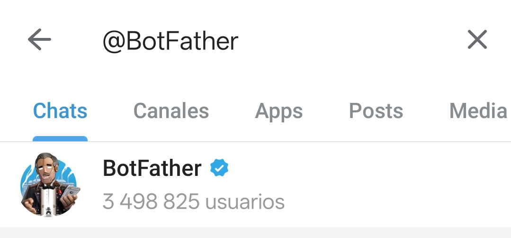
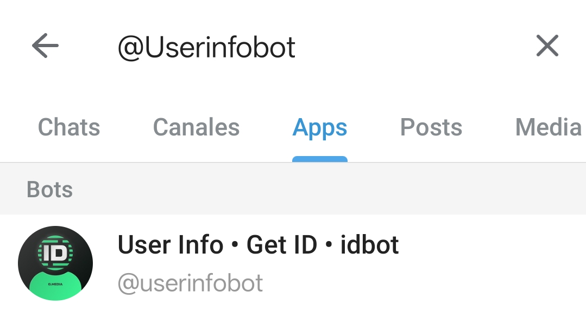
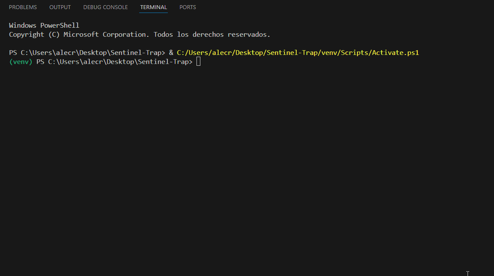
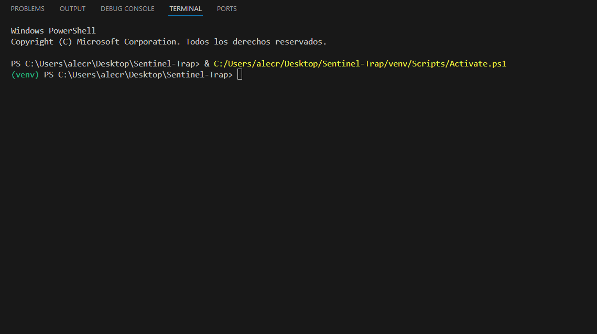
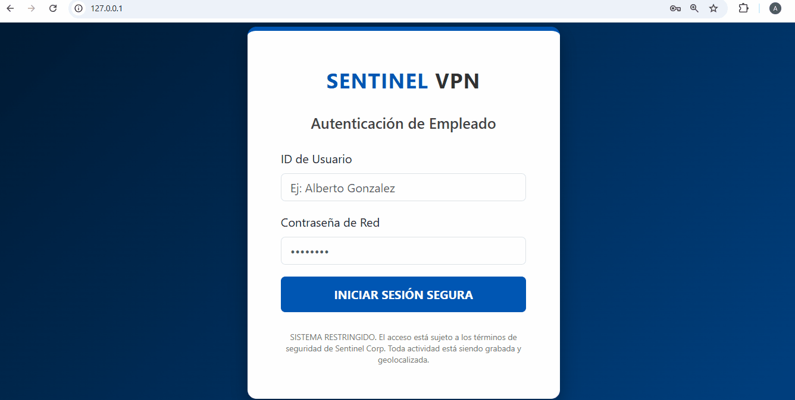

Sentinel
Honeypot
Sentinel
Honeypot
¿Cómo funciona Sentinel?
Sentinel es un honeypot de media interacción diseñado para capturar y geolocalizar atacantes en tiempo real. Simula un portal VPN corporativo para atraer intrusos y notificar inmediatamente vía Telegram.
Fase 1: Configuración de Telegram
El sistema requiere un bot privado para el envío de alertas. Sigue estos pasos:
-
Crear Bot: Busca a
@BotFatheren Telegram para generar tu API Token. Una vez hecho tendras que darle a /newbot para configurar tu bot y desbloquear tu API Token.

-
Obtener ID: Utiliza
@userinfobotpara conocer tu Chat ID personal.

Fase 2: Instalación
Clona el repositorio y ejecuta el instalador de dependencias:
Librerías: Flask, Requests, Python-Dotenv, Colorama.
Fase 3: Demos de Funcionamiento
1. Despliegue de la Trampa Web (web_trap.py)
2. Inicio del Monitor de Defensa (defense_report.py)
Fase 4: Interfaz y Alertas
Vista del portal VPN que encuentra el atacante:
Notificación en Telegram

Precisión de Rastreo
El sistema utiliza geolocalización por IP con un radio de precisión de 1 a 5 km. Genera un enlace a Google Maps con las coordenadas del incidente.